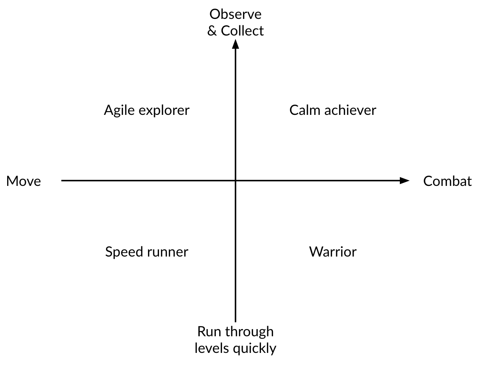

The forest of Nibel is dying, after a powerful storm sets a series of devastating events in motion. An unlikely hero must journey to find his courage and confront a dark nemesis to save his home. “The Spirit Tree” who has some magical powers that can again give life to the forest. But due to devastating events in the forest, The Spirit Tree’s magical powers becomes weaken and required three elements (Water, Wind, Fire) to restore these magical powers. The hero must collect all the required three elements i.e., Water, Wind & fire and gives these elements to “The Spirit Tree”. After gaining all the magical powers, The Spirit Tree have to do a magic that recover the forest. Finally, the forest gains it greenery back and the hero secure his home as well as others forest species. “Ori and the Blind Forest” explores a deeply emotional story about love a sacrifice, and the hope that exist in us all.
2. Genres:
Metroid Vania
Fighting Game
3. Target Audience:
The game “Ori and The Blind Forest” is 16+ game because it will contain emotional content.
4. Project Scope:
Ori and the Blind Forest is a 2D Metroidvania; a platform game with an emphasis on exploration, collecting items and upgrades, and backtracking to previously inaccessible areas. Our hero faces many hurdles while collecting elements i.e., water, wind & fire. These hurdles include fight with dragons etc. He must have to collect all the elements in a certain time to win this game. Our hero loses his energy with time. He must have to collect energy boost to refill his energy.
Gameplay
1. Objectives:
To survive the character “Ori” in the forest as he loses his energy with time.
To collect the living elements that are Water, Wind, and fire from the forest.
To provide all the living element to The Spirit Tree which revive the forest.
2. Game Progressions:
The game starts with a destroyed forest due to a thunderstorm. The character “Ori” lost his home due to the storm and wandering in the forest. During this situation, he found a tree with some supernatural abilities, spiritual power. As the forest is dying, there is a need of hero who can save the life of forest. Then, Ori start thinking about the survival of himself as well as the forest. He know about the tree and the spiritual power of tree which is weakened and can be revive with the help of living elements of life that is water, air, and fire. With the progression of levels, the game’s difficulty will line up with player’s ability.
Here the main story of game begins, Ori started his journey to collect the living elements. He has three paths with respect to three elements, he started his search for the elements in the forest. The forest is full of danger due to dragons which are hurdles in the path of the character of the game. After combatting with the dragons and getting energy from different resources, Ori become successful in the collection of elements. One level completes on the collection of required of any one element and second level begins afterwards.
After the collection of all elements, Ori get back to The Spiritual tree and give all the living elements to the game. The Tree get back to its life after empowerment of the living elements. At the end of the game, The Spiritual tree revive the life of the forest.
3. In-game GUIs:
This section consists of all the GUIs used in the game. These layouts are designed in Figma. These are given below:
Welcome
Main Menu
Gameplay
Pause Menu
Settings
Message Window
Confirmation Window
Mechanics
1. Rules:
The power of Ori reduces with time, so he need energy boost to survive.
Ori has to go through the combat against dragons to achieve living elements.
Ori has to acquire specific units of water, air, and fire.
The spiritual tree need living elements in order to revive the life of forest.
Ori has limited weapons to fight with dragons.
If weapons lost, Ori will have to fight with dragons only by hand.
2. Combat:
In this game, combat is simple. The player just pressed a button to shoot homing bullets at nearby enemies. Fighting mostly meant being near enemy and spamming a button. Ori can also throw a giant energy lance. This is much slower than his bow, but it does a lot more damage. He can also throw a ball of light that explodes like a grenade. Not all of the abilities focus on combat. One can use up energy (the resource you need to use many of the moves) to restore health. Having all of these new tools make fights a lot more interesting.
3. Physics:
Physics is the base of any game. Like other Metroid Vania games, a lot of physics materials will be used for the movement of characters, animations in the scenes, etc. Some of the major physics elements used in the game are:
Colliders on character and surfaces of scenes for the movement of the character.
Colliders for the interaction between different characters.
Colliders for the collection of game objects by the character.
Mass and friction for the movement of the character.
And many more…
The core mechanic in the game is when Ori bashes projectiles, lanterns, or enemies, pushing them to one direction and pushing themselves to the opposite direction.
Apart from these mechanics-heavy interest curves, Ori also keeps its high level of interest through its gorgeous hand-painted worlds, orchestral music, and a deep story about love, growth, and sacrifice.

Game Elements
1. Story:
The forest of Nibel is dying, after a powerful storm sets a series of devastating events in motion. An unlikely hero must journey to find his courage and confront a dark nemesis to save his home. “The Spirit Tree” who has some magical powers that can again give life to the forest. But due to devastating events in the forest, The Spirit Tree’s magical powers becomes weaken and required three elements (Water, Wind, Fire) to restore these magical powers. The hero must collect all the required three elements i.e., Water, Wind & fire and gives these elements to “The Spirit Tree”. After gaining all the magical powers, The Spirit Tree have to do a magic that recover the forest. Finally, the forest gains it greenery back and the hero secure his home as well as others forest species.
The story begins with the introductory video in which the situation of the forest before the storm and after the storm will discussed. After powerful storm, all the forest’s species lose their home/shelter. They effect badly due to this storm. They have no food to eat as all the forest is destroyed. All the species go to the “The Spirit Tree” and ask him to do a magic that gives life to the forest. “The Spirit Tree” tell them that he needs three basic elements to do a magic Fire, Water, Wind elements. He also tells them that these elements are not to be found easily. Who want to reach to these elements will also face a lot of hurdles. And there is a high risk that he will never return, lose his life. So, All the species discuss to each other who will get all these elements? Who is brave among us? At least, a specie named “Ori” comes forward and tell them that he will go and get all these three elements back and give them to “The Spirit Tree”. All species begin admiring of “Ori” braveness.
Now, the “Ori” starts its journey towards the first element “Wind”. He faces many hurdles while he is in his journey. He must collect energy booster while going toward the element. These boosters will refill his energy while fighting with dragon. Finally, he reached to the element “Wind”, but he has to fight with and kill the Wind dragon who are guarding this element. After killing the dragon, he starts his journey toward second element “Water” which is deep inside the ocean. He also faces the same hurdles and reach to the element, but he has to kill the second dragon who is guarding the element “Water”. After killing the Water dragon, he starts his journey toward third and last element “Fire” which is top of the mountain. He also faces the hurdles include fire storm, etc. and reach to the element but he has to kill the third dragon who is guarding the element “Fire”.
Finally, after getting all these three elements he returns to “The Spirit Tree” and give him these elements. “The Spirit Tree” finally able to do magic and after doing so, the forest gain its greenery back and all the species again live a happy life.
2. Characters:
Ori (Main Character / Hero)
Wind Dragon (Opponents/Enemies)
Water Dragon (Opponents/Enemies)
Fire Dragon (Opponents/Enemies)
3. Locations:
Forest (Where the whole species live)
Desert (Where our hero “Ori” will go to find “Wind” element)
Deep under the Water (Where our hero “Ori” will go to find “Water” element)
Mountains (Where our hero “Ori” will go to find “Fire” element)
4. Levels:
Wind Level:
From this level, the “Ori” starts its journey towards the first element “Wind”. He faces many hurdles while he is in his journey. He must collect energy booster while going toward the element. These boosters will refill his energy while fighting with dragon. Finally, he reached to the element “Wind”, but he has to fight with and kill the Wind dragon who are guarding this element.
Water Level:
After Wind level, the second level will be Water level. From this level, the “Ori” starts his journey toward second element “Water” which is deep inside the ocean. He also faces the same hurdles and reach to the element, but he has to kill the second dragon who is guarding the element “Water”.
Fire Level:
After Water level, the second level will be Fire level. From this level, the “Ori” starts his journey toward third and last element “Fire” which is top of the mountain. He also faces the hurdles include fire storm, etc. and reach to the element but he has to kill the third dragon who is guarding the element “Fire”.
Assets
1. Music and Sound Effect:
The music throughout the game will be constant. The main theme music will be on background of the menu. The music is the combinations of sad melodies, abstract synthesized composition, and elegant piano pieces, will really set the tone for the game and bring out the games story.
To prevent repetition many of the sounds being used will be sampled multiple time. For example, select an option form menu will not always have the same sound effect and footsteps sounds in all the level will be different.
2. 2D Art:
Menu background
All textures for environment
Ending credits
Starting intro
Hero (player)
All individual pieces of art in game (tress, grass etc.)
Conclusion
In conclusion, Ori presents exceptionally strong aesthetics through the coherent combination of stunning visuals, immersive music, interesting and powerful abilities, controlled freedom, and carefully designed levels.